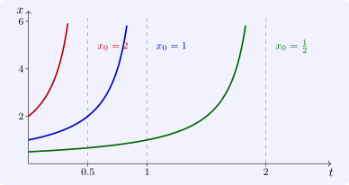

3.3 Blow-up
For a scalar autonomous equation the blow-up question has a complete answer.
Theorem 3.3.1. Let \(g\) be continuous and positive on \([x_0, \infty )\), and \(\phi \) the solution of \(x' = g(x)\), \(x(0) = x_0\). Then \(\phi \) is increasing, and it blows up in finite time if and only if \[ T = \int _{x_0}^\infty \frac {dx}{g(x)} < \infty , \] in which case \(T\) is the blow-up time.
Proof. Since \(\phi ' = g(\phi ) > 0\), \(\phi \) is increasing, and by Theorem 1.3.1 the time to go from \(x_0\) to any \(X > x_0\) is \(\int _{x_0}^Xdx/g(x)\). If the integral to infinity is finite, the solution reaches every value \(X\) before time \(T\), and so tends to infinity as \(t \to T\), which must then be \(\omega _+\). If the integral diverges, reaching any value \(X\) takes a finite time but reaching infinity does not: \(\phi \) is finite for every \(t \geq 0\), so it exists for all \(t \geq 0\). □
For \(x' = x^p\) with \(p > 1\) the integral is \(x_0^{1-p}/(p - 1)\), finite; for \(x' = x\) it diverges, as it does for \(x' = x\log x\), which grows faster than linearly but not fast enough to blow up. The borderline is the same as Osgood’s: blow-up requires \(\int ^\infty dx/g(x) < \infty \). For \(x' = x^2\) from \(x_0 > 0\) the solution is \(x_0/(1 - x_0t)\), which blows up at \(T = 1/x_0\): larger initial values blow up sooner (Figure 5). For non-autonomous equations there is no such formula, and comparison is the tool.

Questions on this section
Stuck on something here? Ask below and it stays attached to this topic.